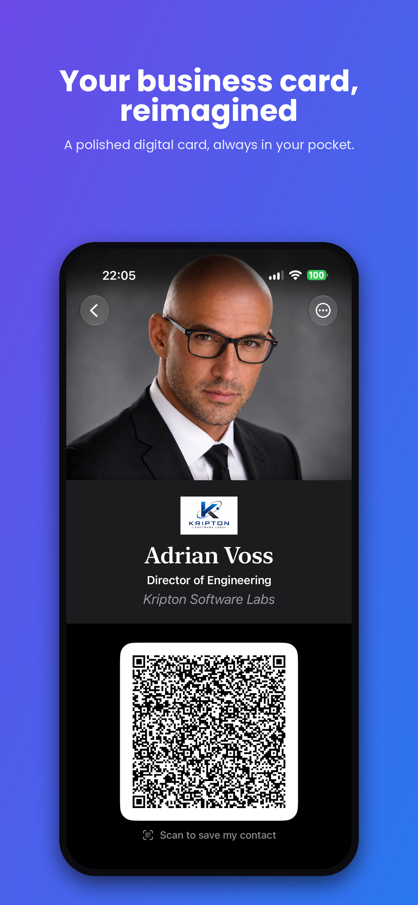
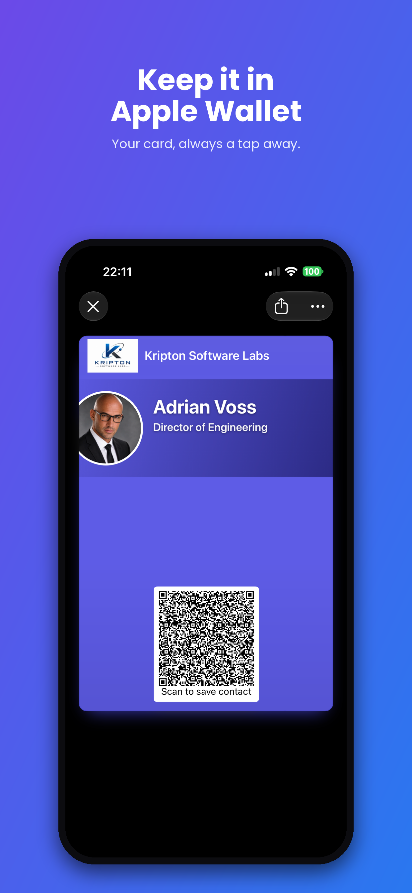
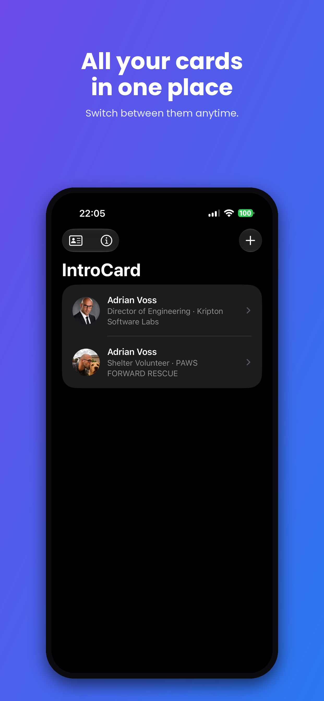
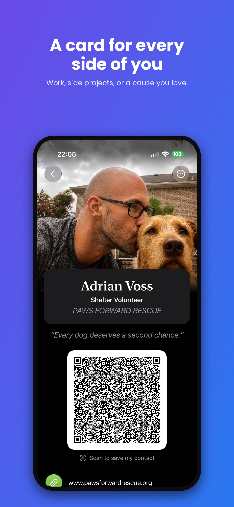
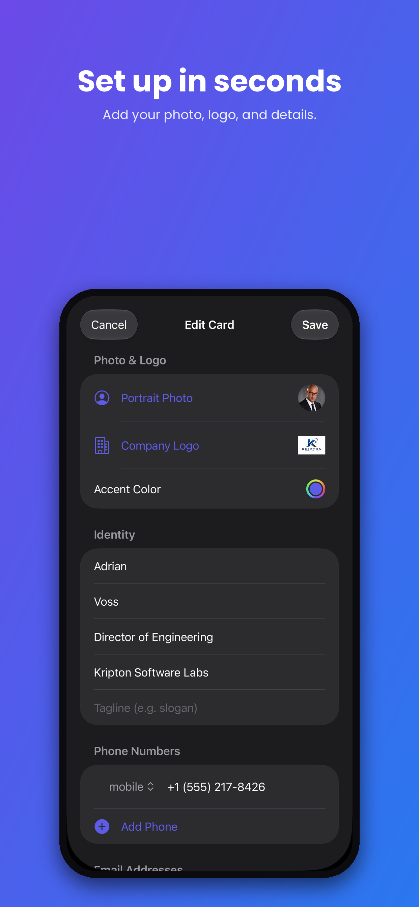
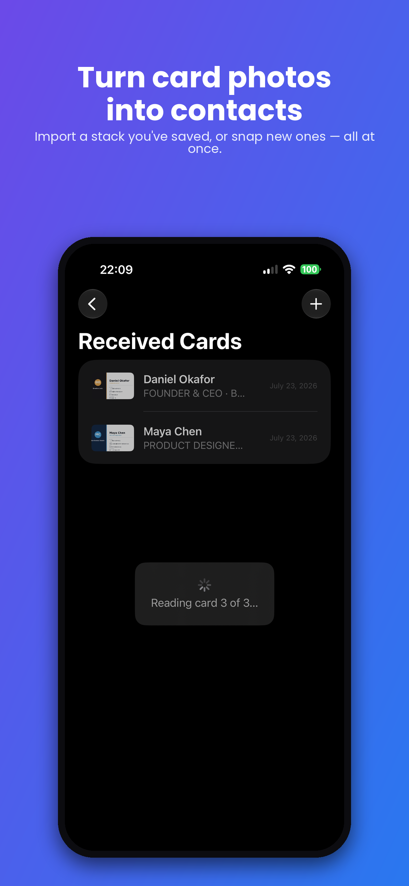
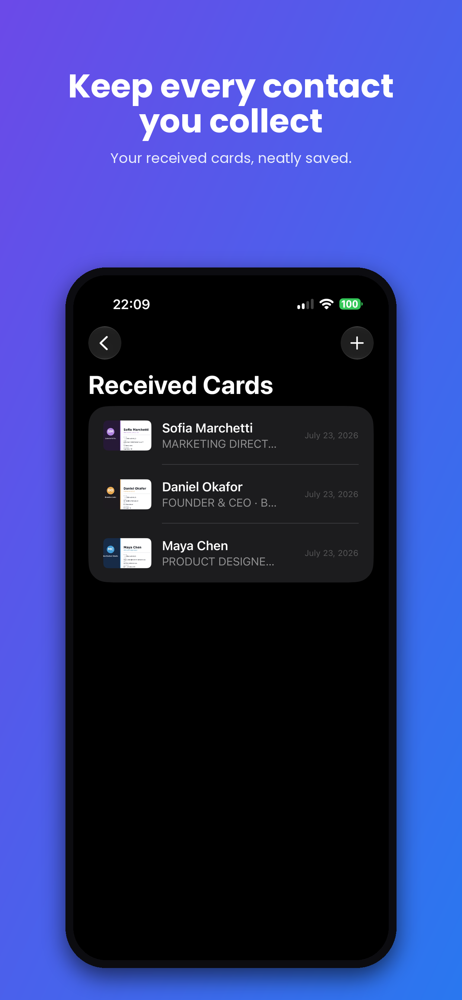
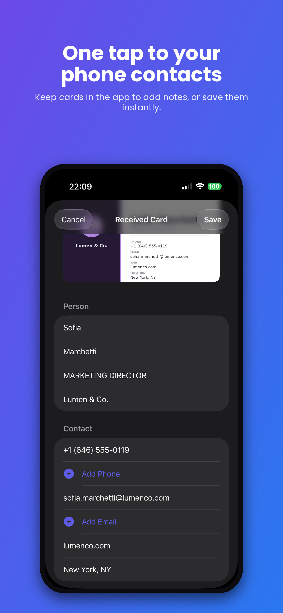
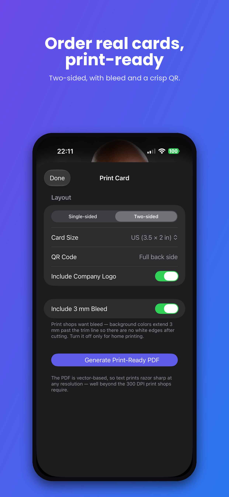
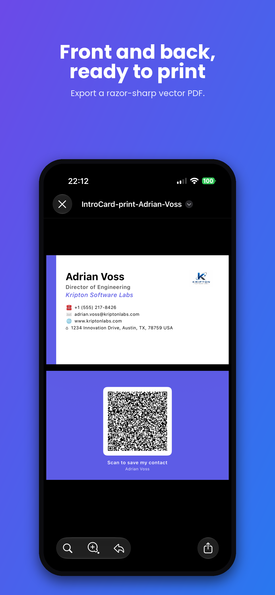

Your business card, reimagined.
IntroCard turns your portrait, name, and company details into a polished digital business card. Share it with a QR code or an Apple Wallet pass, scan the physical cards people hand you, and order printed cards from the same design. No account, no tracking, nothing ever leaves your device.

One card. Every way to share.
Everything you need to hand out your details, and to keep the details people hand you.
Your digital business card
A clean, elegant card with your portrait, name, title, company, contact details, tagline, and accent color. Add your company logo for a professional finish.
Scannable vCard QR
Anyone can scan your QR code with their phone camera and save your full contact details instantly. No app required on their end.
Apple Wallet pass
Add your card to Apple Wallet so it is just a double-click away, right from your lock screen. All your details live on the back of the pass.
A card for every role
Keep multiple cards for work, side projects, or a cause you love, and switch between them anytime.
Scan paper cards
Point the camera at a physical business card someone hands you, or import photos of cards you already took. Scan a whole stack in one go.
Smart field extraction
On-device text recognition reads the name, title, company, phones, emails, and address from the card. Nothing is sent to a server.
Notes and photos
Remember where you met. Add notes and attach photos to every card you receive.
One tap to Contacts
Export any received card straight to your iPhone Contacts with the details pre-filled.
Socials and documents
Add your social profiles and a document link, like a brochure or price list, so they travel inside your QR code.
Print-ready card design
Generate a standard business card image, your info on one side and your QR code on the other, ready to send to any print shop.
iCloud sync
Your cards and scanned contacts stay in your personal iCloud and follow you across your devices.
Private by design
No account. No sign-up. No tracking. No servers. Everything happens on your phone and in your own iCloud.
From details to done in four steps.
Set it up once, then share it everywhere.
Add your details
Import from Contacts or enter your name, title, company, and contact info, and add a portrait photo.
Share your QR
Show your QR code, or add your card to Apple Wallet so it is always at hand.
Scan cards you receive
Turn the physical business cards people hand you into contacts, right on your phone.
Order physical cards
Export the print-ready card image and send it to your printer of choice.
Screenshots
A quick tour of IntroCard.








